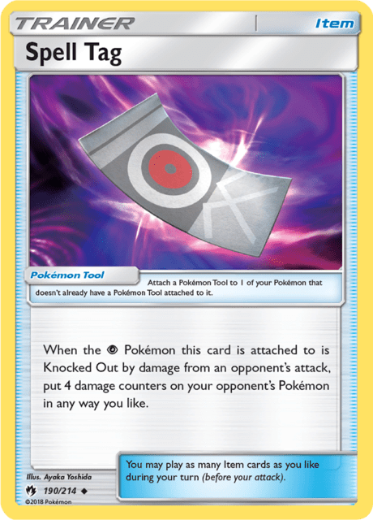
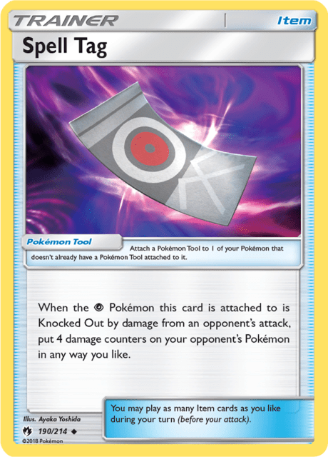

What does it mean to have a ‘healthy’ format? What does it take for a card to be ‘toxic’ enough to threaten that health? Due to one of the most infamous cards in the modern era of the Pokémon Trading Card Game, the Sun & Moon through Lost Thunder format is polarizing, to say the least. Many within the competitive and retro communities respectively regard SUM-LOT as one of the greatest modern eras, while others have nothing but disdain for it. Using this format as a case study, we’ll examine the debate over what makes a meta ‘healthy’ or not, discuss the makings of toxic cards, and seek to answer the question of why SUM-LOT remains so controversial. Let’s dive in!
Table of Contents:
• Why is SUM-LOT So Controversial?
• The Case For & Against - SUM-LOT
Introduction to Sun & Moon to Lost Thunder
Lost Thunder was released in English on November 2nd, 2018 as the eighth expansion in the Sun & Moon block. The set contained a mind-blowing 236 cards in total, including thirteen GX cards in various rarities, and seven new Prism Star cards. With such a wealth of new cards introduced into the deck building pool, it came as no surprise that so many of them turned out to be competitively viable at one point or another.
Eleven major tournaments took place in this format, ranging from the Latin American International Championships in November of 2018, to the Peru Special Event in February of 2019. Three Regionals were held in the SUM-LOT era, one in the United States, one in Australia, and another in the UK.
The competitive landscape was dramatically altered by the release of Lost Thunder, with the introduction of several new top-tier archetypes, techs, and even an entirely new deck building engine. Of the thirteen new GX cards introduced with this set, a whopping ten of them saw at least fringe play, either as their own archetypes or as techs in others – though some not until later formats. Lost Thunder also gave us Prism Star Stadiums for the first time, one of which saw widespread and immediate success.
Let’s take a look at some of the top cards from Lost Thunder, based on competitive usage at the time of the set’s release:
Ditto Prism Star:
This card became an instant inclusion in nearly every evolution-based deck due to its ‘Almighty Evolution’ Ability, which allowed for incredible versatility in deckbuilding. It could function as an effective ‘fifth’ basic in decks like Zoroark and Malamar, give more consistency to decks with many different evolving lines like Gardevoir or Granbull, and even allow you to play zero copies of a basic, relying solely on Ditto as was the case with Alolan Muk. This card was a staple of any evolving deck throughout the entirety of its Standard legality.

Professor Elm’s Lecture:
Elm allowed you to search your deck for up to three Pokémon with 60 or less HP and add them to your hand. Many decks like Gardevoir and Zoroark relied heavily on this card, often running the full four copies in a deck. Throughout the Sun & Moon block, many of these turn one setup Supporters were included in decks to benefit from Tapu Lele GX’s ‘Wonder Tag’ Ability, allowing for a Supporter to be searched from your deck. Unlike in the current Standard format rules, Supporters could be played on your first turn during this time, and as such, setup cards like Elm were invaluable in establishing your board.

Blacephalon GX:
The Ultra Beast mechanic in the Pokémon TCG reached new heights with Blacephalon GX. Affectionately named “Blowns,” the Blacephalon deck took advantage of Forbidden Light’s Beast Ring item, and the newly released Naganadel’s ‘Charging Up’ Ability to flood the board with Fire Energy to be sent to the Lost Zone for Blacephalon’s “Mind Blown” attack. A hot pick at tournaments throughout its legality, Blacephalon was easily the most popular entirely new archetype to be introduced from Lost Thunder.
Naganadel:
While Naganadel was a natural fit for the Blacephalon deck, it also inspired another deck that inspired a near-cult following: NagQuag. Utilizing the ‘Charging Up’ Ability of Naganadel to accelerate Energy from your Discard Pile, Quagsire from Dragon Majesty would then use its ‘Wash Out’ Ability to move all Water Energy to an Active attacker of choice. The deck was never considered “top tier,” however it was always a popular choice for smaller local events like League Cups and Challenges, and remains a format favorite.

Granbull:
One of the most notoriously challenging decks to pilot, Granbull relied on playing with a zero card hand to activate the bonus damage of the “All Out” attack. When adding in cards like Shrine of Punishment and Choice Band to supply additional damage, Granbull was a powerhouse single-prizer with tremendous potential. The engine of the deck used Celestial Storm’s Magcargo with its ‘Smooth Over’ Ability in conjunction with Oranguru from Sun & Moon’s ‘Instruct’ to manipulate your hand and top-deck to facilitate playing with an empty hand. With its high damage output and favorable prize trade against the heavy two-prize meta, Granbull was another popular brand new archetype from the Lost Thunder expansion.
Alolan Ninetales GX:
While Alolan Ninetales GX never had a deck of its own per say, the card quickly saw play as an engine that enabled many new archetypes to exist, and also breathed life into older ones. Pre-existing decks like Buzzwole GX took advantage of the ‘Mysterious Guidance’ Ability to search out valuable Items like Beast Ring, while some Stage 2-centric decks like Gardevoir and Zoroark/Decidueye relied on this Ability to consistently find Rare Candy. Many decks, like the two just mentioned, were also able to utilize Ninetales as an attacker. Its “Snowy Wind” attack could set up some key damage, dealing 70 to the Active and 30 to a Benched Pokémon, while the “Sublimation GX” attack was able to instantly knock out an opposing Ultra Beast Pokémon, of which there were many in the field. Much of the Sun & Moon to Lost Thunder format was dominated by this new Alolan Ninetales GX engine.

(Honorable Mentions: Giratina, Spell Tag, Jumpluff, Heat Factory Prism Star)
 



Major Players: The Decks of Sun & Moon to Lost Thunder
The Old Guard: Gardevoir’s Second Coming
Let’s get one thing straight. Gardevoir GX, a deck that saw immediate success upon its release in the Burning Shadows expansion, going on to win the 2017 World Championships in the Masters division, was never quite dead. With Sun & Moon base and the introduction of GX cards as Stage 1 and Stage 2 Pokémon instead of the dreaded "Big Basics" of the EX-era, (not to be confused with the lowercase ex-era), cards like Gardevoir GX relied heavily on the relative speed of the surrounding metagame to find their success. Despite the card itself being an undisputed powerhouse, the challenges of being a Stage 2 Pokémon that required either two turns of evolution, or finding timely combo pieces like Rare Candy, had seen Gardevoir fade in competitive relevance. Though Gardy found some success partnered with Zoroark GX prior to the 2018 World Championships, Buzzwole GX and other aggressive Basic or Stage 1 decks could now simply outclass the slower Stage 2 Pokémon.
That all changed with the release of Lost Thunder and Alolan Ninetales GX however. As previously mentioned, Alolan Ninetales introduced itself as a brand new engine for many different decks, but none had such a natural fit as alongside Gardevoir. Builds of old traditionally included Alolan Vulpix (GRI) solely for its ‘Beacon’ attack, which cost zero energy and allowed you to search for two Pokémon from your deck, and wouldn’t you know, guess what Alolan Vulpix evolves into? Ninetales, and its ‘Mysterious Guidance’ Ability, had seemingly solved the age-old problem with Stage 2 decks: consistency. But the Fairy type GX Pokémon wasn’t just a support card in this deck. Equipped with two decent attacks in “Snowy Wind” and “Sublimation GX,” and paired with Gardevoir’s ‘Secret Spring’ Ability allowing for energy acceleration, Ninetales was suddenly transformed into an effective secondary attacker, too.
Abusing the consistency Alolan Ninetales GX afforded in setting up Stage 2 Pokémon, Gardevoir GX decks now opted to include a small line of the single-prize Swampert from Celestial Storm. With its “Power Draw” Ability, eerily similar to Zoroark GX’s “Trade,” Swampert served as a draw engine with an Ability that allowed you to discard a card and draw three from your deck. The synergy of Alolan Ninetales GX and Swampert CES did not end there, however. With Swampert and Ninetales both evolving from Water basic Pokémon, the Brooklet Hill Stadium slotted perfectly into the deck to search them out and boost that early game consistency. Going even one step further still, the new Professor Elm’s Lecture Supporter, and Ditto Prism Star cards became the glue that suddenly thrusted Gardevoir back into prominence.
After a modest showing at the Latin American International Championships, with only two Top 64 placements for the deck, and Jimmy Pendarvis piloted Gardevoir on a dominant run to take down the Roanoke Regional just a week later. The sheer power and versatility of the deck was on full display in Jimmy’s masterful hands, as one of the greatest talents this game has ever seen playing one of the most impactful cards in the modern era.


Source: Jimmy Pendarvis - 1st Place Roanoke Regionals
View other decks from the SUM-LOT format here
Riotous Beating the Competition: Zoroark’s Still the King
One of the most dominant cards ever printed, Zoroark GX and its vaunted “Trade” Ability just refused to go away. Regional winner... International winner... Worlds winner... Zoroark had done it all! Even with the release of powerful Fighting type Pokémon hitting it for weakness like Buzzwole GX and its non GX counterpart, Zoroark always found a way to adapt. Doubling as both a draw engine and also a secondary, or even main attacker with the “Riotous Beating” attack, which only required a single attachment in Double Colorless Energy, Zoroark plus *insert random Pokémon here* could be tailored for any meta.
So what happens when you put two of the most powerful consistency Pokémon in the same deck? Enter ZDT–ZoroDeciTales. Moving into the Lost Thunder era, Decidueye GX, like its Stage 2 GX counterpart in Gardevoir GX, had also faded from the meta – especially after losing Forest of Giant Plants to rotation following the 2017 season. Iterations of Zoroark/Decidueye decks had existed prior to Lost Thunder, dating back to the first tournament of Zoroark’s legality in the 2017/18’ season, but the addition of Alolan Ninetales GX took the deck to new heights. Starting with LAIC, ZDT had a staggering twenty Top 64 or better finishes across the SUM-LOT tournament series, including seven placements in Top 4 or better of those events. The most successful ZDT player ever, Clifton Goh, a player from Singapore, was responsible for two of theose major Top 4 placements. So what made the deck so good?
The strength of ZDT ultimately came down to a few factors. It may seem obvious, but player skill was a major element to the deck’s success, rewarding patience and finesse like no other deck in the field. Typical builds of the archetype included a suite of incredibly powerful, albeit reactive cards like Counter Catcher, Counter Gain, Max Potion, and Enhanced Hammer. With these tools, and Alolan Ninetales GX to find them at the precise moment, ZDT was equipped to take complete control of a game, virtually out of nowhere. Decidueye GX’s “Feather Arrow” Ability could spread damage to fix Zoroark math, set up surprise snipe knockouts with “Snowy Wind,” or finish off hanging KOs, often taking 4 or more prizes in a single turn! A major theme in this era of the competitive scene was very focused on cards influenced by your prize count, and the ability to skip over the Beast Ring or “Sledgehammer” turns entirely made for an incredibly exhilarating deck that you could never quite count out. Check out ZDT and other SUM-LOT Zoroark decks here.
Mind Blowing Power: Blacephalon’s Arrival
One of the new archetypes to arise entirely from Lost Thunder, Blacephalon GX was a prototypical run-hot Fire deck: go fast, hit hard. Lots of fireworks. It was unquestionably a strong archetype, but much of the competitive community regarded it as a linear deck with a fairly exploitable Achilles heel. Blacephalon’s “Mind Blown” attack had virtually no limit to the damage it could dish out, but only so long as it had a steady flow of Energy in play to fuel the attack. Manipulating knockouts to play around Beast Ring, one of the main methods of accelerating Energy into play for Blacephalon decks, became a common strategy of many decks with the power to take multiple prizes in a turn. For the decks that couldn’t accomplish this, it was common to pair a knockout with a disruption card like Judge, or Marshadow’s “Let Loose,” to attempt to deny the Blacephalon player from drawing Beast Rings on the turn of their activation. But despite much of the format warping to find answers to Blacephalon’s aggression, the deck somehow still continued to see success. How?
The easy answer is “Let Loose” Marshadow. Playing a full count of Mysterious Treasure in order to discard Fire Energy and search out the Psychic Naganadel evolution pieces, the Psychic type Marshadow fit into the deck perfectly. Much like the Rayquaza GX deck that took the 2018 World Championships by storm, Marshadow’s inclusion was multi-purposed. The Ability-driven card draw gave the deck more push potential throughout the game, helping to find a pivotal Guzma or Beast Ring to close out games. Of course, the disruption potential of “Let Loose” was a legitimate win-condition unto itself. The explosive turn one potential of a Blacephalon deck could see a player draw all the way up to eight cards with the Lillie Supporter, then close the turn with a “Let Loose” to set your opponent down to four cards before they’d even had a turn. This alone often proved enough to upset your opponent’s tempo, and give the Blown’s player the edge.
Another key factor in Blacephalon’s success was its access to a Psychic type attacker in Naganadel from Lost Thunder. Its “Turning Point” attack dealt 80 damage for three energy, dealing an additional 80 if you had exactly three prizes remaining. This might seem situational and underwhelming at first, but when you consider that Buzzwole GX decks were hugely popular in this metagame, the math starts to become clearer. With the double weakness thanks to Naganadel’s Psychic typing, that initial 80 damage suddenly becomes a massive 160. Add in cards like Beast Energy or Choice Band and you’re suddenly swinging for a clean knockout on opposing Buzzwole. Even the non GX Buzzwole, too, would fall to an unboosted “Turning Point.” Often, in metagames, having a favorable matchup to another of the format’s most popular decks can be enough to make any deck a strong contender. The matchup was by no means an auto-win for Blacephalon, but it gave a touch of nuance and versatility to an otherwise linear deck.


Source: Zach Lesage - Top 8 Latin America Internationals
View other decks from the SUM-LOT format here
Perhaps one of the biggest reasons for Blacephalon’s sustained success is also one of the simplest ones; the deck was incredibly popular. Its aggression and speed made Blacephalon an attractive pick for huge percentages of major event attendees, and the deck’s conversion rate was solid. Twenty four Blacephalon decks appeared in Top 64 or better of LAIC and Roanoke, with three of those finishing were in Top 8 or higher. Despite its apparent simplicity, Blacephalon was, and remained, a powerhouse archetype for nearly its entire legality.
Flexin’ Muscles: Buzzwole’s Resurgence
The swole mosquito Pokémon, Buzzwole GX had managed to stake its own claim to dominance in nearly every format since its release in 2017’s Crimson Invasion expansion. At its debut in London at the 2018 European International Championships, ‘Buzzroc,’ a deck featuring Buzzwole GX alongside Lycanroc GX, had cruised through the field with two placements in the Top 8 of the tournament. In the formats following, Buzzwole GX continued its strong presence in the metagame, establishing a rivalry with Zoroark GX variants for format supremacy. With the release of the single prize Buzzwole in Forbidden Light, variations of the Fighting deck shifted to focus more on the “Sledgehammer” attacker, utilizing a plethora of damage modifiers to increase the measly 30 damage up to 100 and beyond! At the 2018 World Championships, Buzzwole archetypes saw major success across the Top 8s of every division, though only one such deck placed in the Top 8 of the Masters division.


Similar to the Blacephalon GX deck, much of the strength of Buzzwole decks leading up to and in formats following the 2018 World Championships was forged off the back of the powerful Beast Ring card. But with rotation taking away one of the main draw engines in Octillery from BREAKthrough, Buzzwole decks struggled with consistency, and ultimately in finding those Beast Ring cards on the right turns. If only there was a card that allowed you to search for two such Item cards at the right time. Wait a second... you guessed it, Alolan Ninetales GX was once again the answer. Though Buzzwole relied far less on the Fairy GX Pokémon to establish a board, Ninetales enabled the deck to become even more aggressive and nuanced. And with the Unit Energy FDY providing both Fighting and Fairy Energy, Ninetales also slotted in as a solid secondary attacker that didn’t suffer the unfortunate Psychic weakness and had a slight HP boost over its counterpart.
Despite the shiny new toy that seemed to be in virtually every meta deck, Buzzwole variants did not enjoy as much success as other archetypes, with only a single Top 8 placement across major events during the SUM-LOT era. While it remained solid, with respectable Day 2 conversion throughout the format, the deck inevitably suffered greatly from the existence of so many relevant Psychic Pokémon. But don’t worry Buzzwole, you’ll still go down as one of the most powerful GX Pokémon to ever exist. Check out some Buzzwole decks here.
Squid Games: Malamar’s Recharge
Ever since its release in Forbidden Light prior to the 2018 World Championships, Malamar decks had seen success. Energy acceleration through the “Psychic Recharge” Ability provided a means to power up strong attackers like Necrozma GX from Burning Shadows, Ultra Necrozma GX from Forbidden Light, and later, single-prize attackers like Giratina from Lost Thunder. As one of the strongest and most beloved types throughout the history of the Pokémon TCG, the Psychic type was incredibly well-supported in the Sun & Moon era with cards like Mysterious Treasure and a full complement of powerful attackers to take advantage of Malamar’s Energy acceleration. In the formats since its release, and leading up to the Lost Thunder format, three distinct takes on Malamar emerged, each with their own strengths and weaknesses, which kept the squids as one of the most popular picks in the era.

Referred to simply as “Psychic Malamar,” builds of this kind favored a split of heavy-hitting multi-prizers and reactive single-prize attackers to take full advantage of Malamar’s Ability, typically relying on cards like the aforementioned Necrozma GX to deal massive damage and handle the other high-HP two-prizers dominating the format. Despite a second place finish at the 2018 World Championships, this version of Malamar was unfavorably regarded due to its reliance on two-prize Psychic-weak GX attackers, which could be preyed upon by the many Psychic tech Pokémon prevalent in the format. Additionally, Garbodor from BreakPOINT proved to be a huge threat to the deck (until it rotated following Worlds), since it was particularly reliant on that “Psychic Recharge” Ability to replenish Energy on Necrozma GX after a hefty discard for the “Prismatic Burst” attack. While builds of this design continued to find success (Gaskan, anyone?), with eight Top 8 finishes across majors in this time, the Sun & Moon-on format brought new innovations.


Source: Rahul Reddy - Top 4 Mexico Special Event
View other decks from the SUM-LOT format here
With the release of Celestial Storm and the Shrine of Punishment Stadium card, single-prize attacking decks suddenly became all the rage. Malamar decks, too, adapted this strategy, including copies of Shrine alongside strong non-GX attackers like Shining Lugia and Deoxys from Celestial Storm. Builds of this kind began to favor a damage spread strategy, using cards like Tapu Koko and its “Flying Flip” attack over and over again before closing the game with Tapu Lele’s “Damage Swap” to sweep an opponent’s board. Without two-prize liabilities to prey upon, this deck was much better positioned to make it to a favorable endgame, and proved its merit with four Top 8 finishes and numerous Top 64 placements across the SUM-LOT format.


The third and final build of Malamar focused on Ultra Necrozma-GX as its primary attacker. This variant had arguably the highest ceiling of any of the different iterations of the deck, but it came at a cost. With its “Photon Geyser” attack, Ultra Necrozma could swing for massive KOs out of nowhere, but it requiring a Psychic and a Metal served to dilute the already cramped decklist with a second Energy type. "Ultra Mally" ultimately finished with only two Top 8 placements to its name during this time, but it still remained a powerhouse for much of the Sun & Moon era overall.


Despite the versatility of Malamar decks, the archetype was widely regarded as risky and inconsistent–requiring the setup of multiple frail 90 HP Stage 1 Pokémon and multiple copies of Psychic Energy in the Discard to accelerate. Additionally, Zoroark practically feasted on squids, including a difficult matchup against a top deck to the strikes against Malamar. This did little to dissuade Malamar believers though, as versions of the deck remained incredibly popular and successful across the entirety of its legality.
Gotta (Unown) HAND It To Ya: Stall Beats Em’ All
For the sake of brevity, I will be focusing largely on single-prize builds of stall archetypes, but there are a plethora of various denial variants that found great success during this era. In what should come as a shock to absolutely no one, our old pal, Zoroark GX is back, this time using the power of “Trade” in combination with Oranguru from Ultra Prism to endlessly loop removal cards like Crushing Hammer, Enhanced Hammer, and Plumeria until your opponent runs out of Energy. Oranguru’s “Resource Management” attack would become the subject of many a players’ nightmare during this time for the infinite recursion of hateful and disruptive cards that potentially led to non-interactive board positions.

But enough about Zoroark. What I want to focus on instead, is the above Unown from Lost Thunder. With the absolutely wild “HAND” Ability that literally says “if you have 35 or more cards in your hand… you win this game!” Unown LOT decks were built around high-HP single prize Pokémon that you would use as "walls" to deny your opponent of taking knockouts. Heal cards like Acerola and Max Potion would ensure the longevity of these Pokémon, and the full complement of Energy-denial Trainers would make things as excruciatingly difficult as possible for your opponents. But what made this deck successful in timed matches at major events where other similar archetypes had failed, was that tiny little 60-HP Unown. Using Supporters like Steven’s Resolve, which allowed you to search any three cards out of your deck at the cost of ending your turn, and Lusamine to constantly recur your Supporters from the discard pile, you could eventually gain enough card advantage to reach that incredible 35 cards in hand to announce, “I win the game.” There were obvious, purple-ghost-Pokémon-sized holes in that strategy, as a well-timed “Let Loose” could see 30+ cards go back into the deck, but stall variants were incredibly resilient, able to fall back on the bulk and inconvenience of single prize walls and disruptive Trainers to rebuild their hand.


Source: Aaron Morgan - Top 32 Roanoke Regionals
View other decks from the SUM-LOT format here
Though there wasn’t a single Unown-based stall variant reaching the Top 8 of any major event in this format, the archetype undoubtedly goes down as one of the most powerful in the era by the virtue of its existence alone. With years of hindsight to reflect on, many would rate Unown decks much higher than their results would suggest, even going as far as to suggest that stall decks overall were the best archetype in the metagame. Historically, non-attacking archetypes like these don’t generate the same percentage of an event field as your average take-six-prize-cards style deck, which absolutely influences the overall statistics in analyzing Unown’s success in the SUM-LOT format. The level of skill required to pilot a disruptive deck of this nature over nine or more rounds of high-stress Pokémon undoubtedly turned many players off stall variants, leaving only a slim percentage of the field to carry the torch. But with arguably the most significant stall card ever printed in Oranguru UPR, and the various disruptive and reactive cards at its disposal, stall decks in the SUM-LOT format were undeniably a force to be reckoned with.
So Why is SUM-LOT So Controversial?
To best answer this question we first need to consider some significant factors; did you play competitively during this era? Your perception of SUM-LOT overall will be colored by your firsthand experiences within it. If you had consistently great tournament results, or a favorite pet deck that you grinded through events with, you might recall this particular format more fondly than someone who went 0-3 drop at every event they attended in it. On the other hand, if you’re new to the format and experiencing it for the first time in retrospect, you may have vastly differing opinions of it.
As is the case with anything rooted largely in nostalgia, revisiting old formats is also subject to associated memories, being the circumstances in which past moments were experienced. If the Fall of 2018 was the best time of your life in the context of Pokémon events (regardless of tournament placements) you’ll probably feel more fondness toward the format overall. Maybe you had a tight-knit group of friends who would regularly get together to test, or to travel to events, and the sight of SUM-LOT era cards conjures memories of that group. The psychology of memory is inexorably linked to a hobby like the Pokémon Trading Card Game, where the 25+ years of rich history provide a fitting venue for nostalgia. But getting at the heart of the intricacies of SUM-LOT and the community’s attitude toward it, what is it about this format specifically that seems to evoke such a polarizing response?

What Makes a Good Format? - The ‘Healthy’ vs ‘Good’ Debate
These two terms, often used interchangeably, are more difficult to define than they first may appear. The word ‘healthy’ implies a widespread functionality and well-being, and “not merely the absence of disease and infirmity,” as defined by the World Health Organization in a 2006 publication. While this definition is academic, and refers to living beings, we can, in many ways, think of a format as a living entity. Like a child, a format often starts clumsy and slow, with unrefined decklists and archetypes that don’t end up surviving long. In a format’s adolescence we can start to find the clear cut best decks, then tweak and experiment with them to adapt to the meta shifts. In this stage, hard-counters and control decks typically emerge as the meta narrows and becomes more focused. Then, finally, we come to the twilight of the format, where things become ‘solved,’ or clearly understood to the point that there are objective best decks, with very little variation in decklists for these archetypes. Of course, this is a gross generalization, and every format will have its subtle uniqueness, but you get the idea.
What then, does it mean for something to be ‘good’ within the sphere of competitive Pokémon TCG, and is that the same as something that is ‘healthy?’ The textbook definition of ‘good’ speaks of something “satisfactory in quality,” which we can boil down to a close parallel to our definition of health, being that sense of functionality. For some, a format can be labeled as ‘good’ simply by the virtue of it being playable. I’m sure many of us have survived what we’d call unplayable formats, ie. Lysandre’s Trump Card format in 2015 immediately comes to mind, in which a particular card, deck, or even game rule defined so much of the play experience that it lost the spirit of a ‘fun and interactive game’. The crux of the debate around the SUM-LOT format specifically hinges around this very concept, but more on that later.
An often overlooked contributor to the debate over ‘good’ and ‘bad’ formats is the concept of ‘healthy cards,’ or cards whose existence in the game promotes a healthier overall format. These tend to manifest in the form of comeback cards like N, or Iono, which attempt to rebalance a game state and reward or punish players for playing optimally or overextending for aggression. In a vacuum, cards like these may not be the most well-loved because of the personal associations with being on the receiving end of an N or Iono to one, but you can almost always point to a case where you could have played around that eventuality better. Maybe you needed to thin the dead cards from your deck more diligently, or maybe you could have favored board development over aggression so as not to get so punished by the inevitable disruption. Even still, sometimes you can do all you can and still get bitten by bad variance. But hey, that’s the nature of the Pokémon TCG, and there’s no escaping that.
As previously discussed, context is everything. Even within active formats like our current Standard, detractors will always say the meta is ‘unhealthy’ or ‘bad.’ Whatever their reasoning for feeling this way may be, it is reasonable to assume that a fair percentage of that will be determined from their direct experiences playing within the format. Taking player skill and dead-drawing out of the equation, a format with an objective best deck or decks can be viewed harshly because of the top-heaviness this provides to a metagame. This gets at the heart of one of the core concepts in this debate: what is the role of diversity in a ‘healthy’ format?
Diversity in Metagames
A common trait players often point to in showing ‘good’ formats, is deck diversity, meaning there’s a wide variety of viable archetypes. These formats tend to lack an overwhelming best deck or card that gatekeeps every other archetype. To give a current example, many point to Sableye from Lost Origin as a format gatekeeper in Standard, which prevents so many other archetypes from ever existing outside of a Youtube video simply by the virtue of its existence and ability to dispatch low-HP Pokémon. The same could be said of Mewtwo-EX from Next Destinies in the 2012 format - though Mewtwo’s colorless attack cost and synergy with Double Colorless Energy meant it was playable in more decks than just a Lost Zone engine, as is Sableye’s limitation. To put it more bluntly, if the same three or four decks are constantly in the Top 8 of every major event, you start to feel that the format lacks diversity. We get fatigue from seeing the same decks over and over again, and this affects our enjoyment of the format as a whole. Ex. with what felt like the never-ending Silver Tempest format and its slew of Lugia Archeops decks...
The concept of having agency is another key contributor to one’s experiences, whether that’s in a given match, or a format overall. In narrow formats, where there is only a small number of top tier decks, it might feel restrictive to the point that your agency is taken away because you don’t have a choice when it comes to picking a deck for a tournament, if your goal is to win the event. You could argue that there’s always an objectively best play for the room, but there are certainly times when it can feel like you only have two or three legitimate choices for an event.
Applying this concept to single matches, agency again becomes an important factor in one’s overall attitude toward a format. You remember the back and forth games in an expressive environment that purely promotes the skill of each combatant, which even has a way of softening losses, simply because the result was ultimately within your control. Bad matchups, draws, and variance will always play a role in a game of Pokémon, but if all those factors roughly average out between two opposing players across a tournament experience and you’re left with that elusive “fun and interactive” game, that sure sounds ‘healthy’ and ‘good’ to me.
Of course, the nature of competition with a definite winner and loser (in most cases) is such that what’s fun for some will simultaneously be un-fun for the other. But it’s in that spirit of having agency in the match result that creates positive playing experiences.
The Case For & Against - SUM-LOT
Remove all the superfluous abstractions mentioned above and you can boil down the case for SUM-LOT as either a ‘good’ or ‘bad’ format into two general camps:
| Good Format | Bad Format |
|---|---|
| Deck diversity in playable archetypes made for an interesting and engaging play atmosphere, outweighing the debatable toxicity of “Let Loose” Marshadow. | Marshadow was toxic and frequently created unplayable games that ruined the overall player experience. |
To better understand the debate, let’s take a closer look at the card itself.
Makings of a Villain - Marshadow SLG
Marshadow was released in the Shining Legends set alongside Zoroark GX, which, if you’ll recall, had been legal since October of 2017. Yet curiously, Marshadow saw little-to-no play for several formats. It wasn’t until the 2018 World Championships, where Marshadow had its coming-out-party in the ‘Puzzle Ray’ deck. Released in Celestial Storm, Rayquaza GX decks were the definition of “turbo,” often getting upwards of six energy turn one! Between the “Stormy Winds” Ability, and powerful items like Max Elixir and Puzzle of Time, Rayquaza was the breakout star of the 2018 World Championships. But what really enabled the deck to find that next level was the inclusion of Marshadow SLG, where “Let Loose” was a means to draw additional cards multiple times a turn without committing a Supporter. That it could also brick your opponent with a dead hand occasionally was simply the icing on the cake, but by no means the full intent behind the card. Much like in Blacephalon GX decks in the SUM-LOT format, Marshadow was more of a proactive card in enabling you to progress your own strategy.
So how did Marshadow go from a cog in the “turbo” machine to a staple in a wider selection of decks? With the rotation to Sun & Moon through Celestial Storm following the 2018 World Championships, we lost one of the best Supporter cards the game has ever seen, N. The format now had a significant lack of efficient hand-disruption, relying on cards like Judge as the strongest comeback cards. As the format progressed, copies of Marshadow crept into more and more decks as the value of non-Supporter based hand-disruption became more necessary. The benefit of being able to force your opponent to a low hand-size while still being able to play a Supporter like Guzma, or your own draw Supporter, proved the value of Marshadow over a card like Judge. It was the gradual mentality shift from Marshadow as a draw out, to Marshadow as a disrupter that really keyed the way the card would be used as the format developed.
In hindsight, I find myself wondering how it was so slept on for so long. Perhaps we’d been too spoiled by the Shaymin-EX days to realize the potential of ‘only’ seeing four more cards on a Basic Pokémon. Or maybe the existence of N made it irrelevant as a disruption card? I have a visceral memory of being handed a ‘Puzzle Ray’ list the day before 2018 Worlds, looking at the little 70 HP purple shadow creature and wondering how the heck I’d never seen the card be used before. Little did I know it would soon be everywhere...
“Let Loose” in SUM-LOT
So let’s revisit that ‘good’ vs. ‘bad’ format debate. Marshadow SLG as the crux of the debate hinges largely on the context of the game when it’s played. Using “Let Loose” on the first turn as the player beginning the game to give both players access to only four cards in hand was often heralded as "The Problem", since the player going second wouldn’t be afforded the same opportunity to play the game as the player going first. In many ways, the existence of "Let Loose" Marshadow warped deck building around it, with players opting for heavier Supporter lines, on-board draw engines, or emergency-valve cards like “Instruct” Oranguru, to give them the best chance possible against inevitable Marshadows. But no amount of decklist changes could truly save you from the pure variance of a turn one “Let Loose.” Importantly, Marshadow did not discriminate; whether it was bricking your opponent, or even yourself as the player playing the card, both players were required to shuffle and draw four cards. Of course, having the impetus to play other cards and establish your board before the “Let Loose” still provided a distinct advantage, but it was a decidedly double-edged sword.
Conversely, the Sun & Moon through Lost Thunder format had an undeniable amount of archetype diversity. Across the eleven major events in this format, a staggering nineteen unique decks finished in Top 8 of the respective tournaments, with even more archetypes appearing if you expand that to the Top 16. While this number is inevitably inflated by the prevalence of Zoroark GX and Alolan Ninetales GX in numerous archetypes, in my mind, the pure width of card viability and usage across an ever-expanding metagame speaks to a ‘good’ format overall.
Conclusion
Alright, I can already hear you all yelling at me; “Riley, but how do you feel about SUM-LOT?” In truth, my answer is fairly straightforward. As a whole, I tend to agree that the pure diversity of viable decks makes for an interesting format – especially from the retro collector’s standpoint. You can very easily create a ‘gauntlet’ of eight or so completely unique decks that match decently well into each other and create a balanced, closed format. Sure, a good portion of them would be Zoroark decks, but good cards will always be played and innovated with, as that’s what makes them good. I definitely don’t enjoy Marshadow SLG’s prevalence and role in this format, and will admit that this absolutely affects my desire to play the format overall. It is unquestionably frustrating to lose the coin flip and start the game with four cards in hand through no fault or intervention of your own. But that was part of the game in the 2018-2019 season. And if you survive past that initial test, with all the incredibly powerful combo pieces available in the card pool, games tend to end explosively. Additionally, I’m of the belief that the timing of using “Let Loose” became a skill unto itself. Like with any disruption card in the history of the game, reading your opponent and calculating the percentage of the chances they have the game-winning combination of cards should be just another tool in every player’s arsenal. And Marshadow is no different.
In short, SUM-LOT will not be the first format I reach for when I sit down to play a game of old format. But you won’t have to ask me twice to play it either.
And so, as we reach the end, consider all we’ve covered here today as you formulate your own opinions of ‘healthy’ formats within the Pokémon Trading Card Game's competitive experience. How do you characterize formats as ‘good’ or ‘bad’? How do you view our current Standard format? And how are we feeling about SUM-LOT?